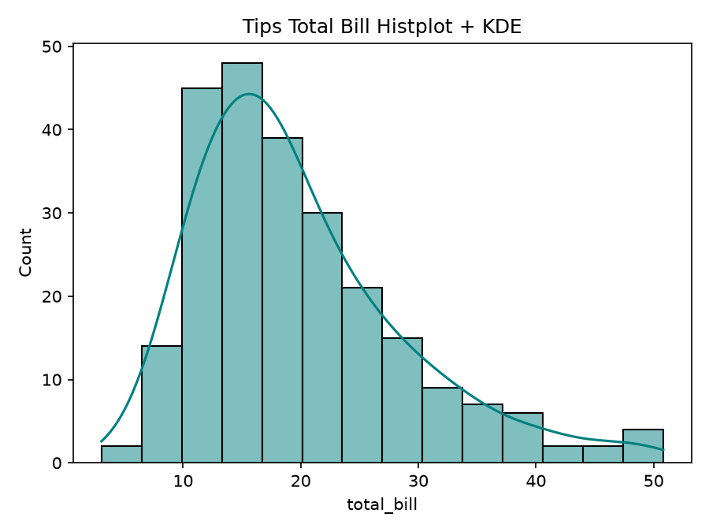
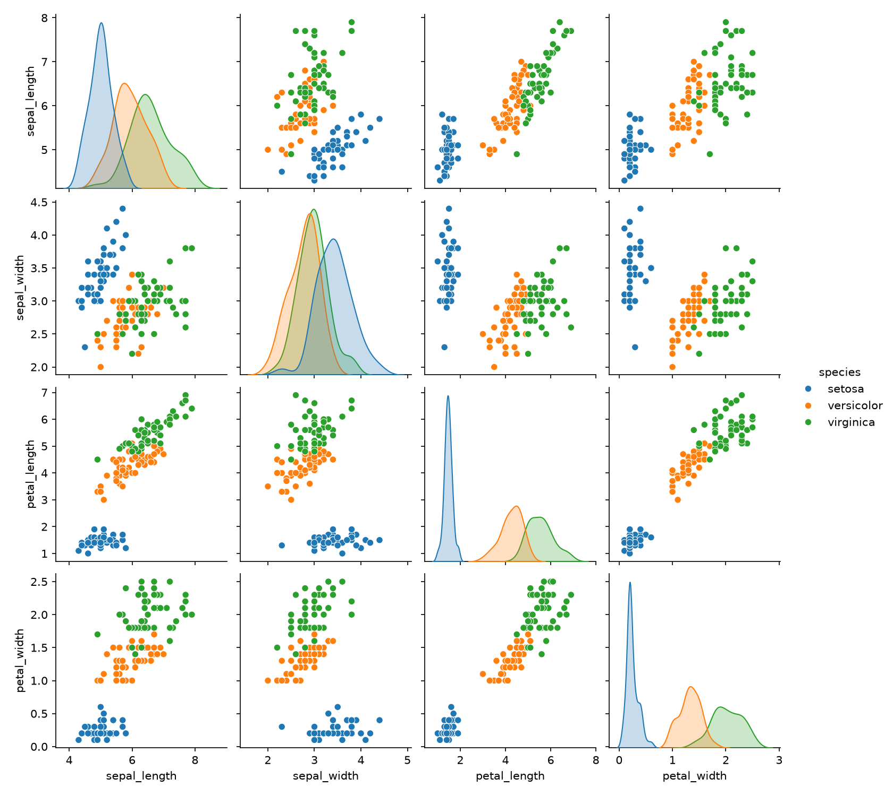
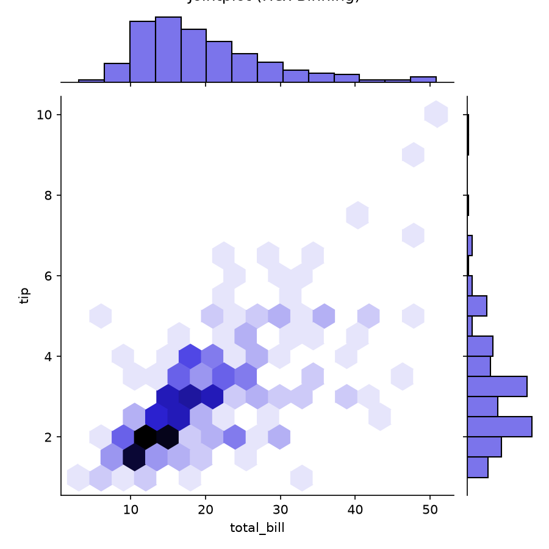
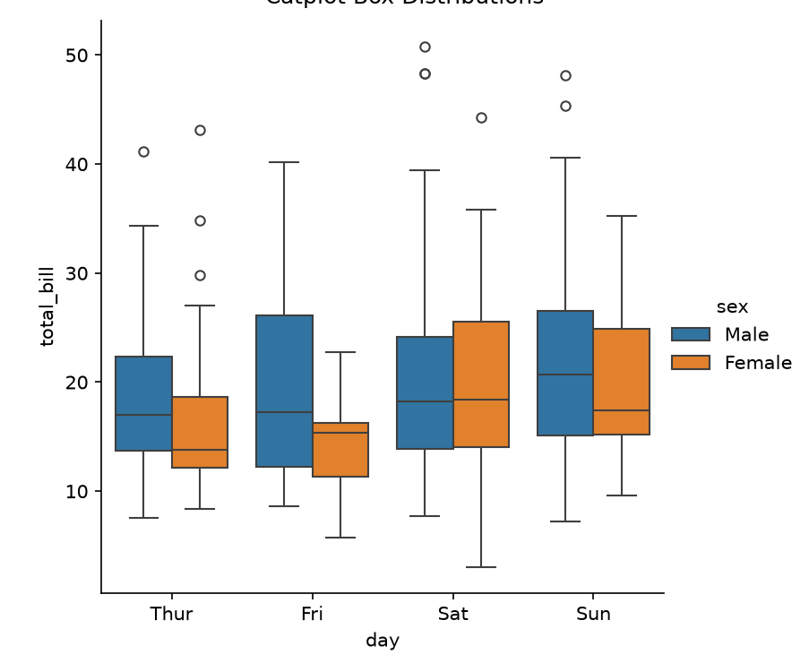

Visualization with Seaborn
Definition: The main idea of Seaborn is that it provides high-level commands to create a variety of plot types useful for statistical data exploration, and even some statistical model fitting. Seaborn is built on top of Matplotlib and integrates closely with Pandas DataFrames.
⚔️ Feature Comparison Matrix: Matplotlib vs. Seaborn
| Feature / Dimension | Matplotlib (Low-Level Core) | Seaborn (High-Level Statistical) |
|---|---|---|
| Level of Abstraction | Low-level (requires manual axis & color setup) | High-level (declarative one-liner functions) |
| Data Integration | NumPy arrays & basic lists | Native Pandas DataFrames (x='col', hue='group') |
| Statistical Estimators | Manual calculation (KDE, regression, CI) | Built-in automatic KDE, linear regression & error bars |
| Subplot Grids | Manual loop over plt.subplots(r, c) |
Automated grids (pairplot, jointplot, FacetGrid) |
| Default Color Themes | Basic default colors | Sophisticated publication-ready color palettes |
| Lines of Code Required | 15–30 lines for complex grouped plots | 1–3 concise lines |
Side-by-Side Code Comparison
Comparing code complexity for common data science visualization tasks in Matplotlib vs. Seaborn. Uses Tips dataset (244 rows × 7 cols) — see Home → Datasets for full schema.
# Grouped Scatter Plot in Matplotlib
fig, ax = plt.subplots(figsize=(6, 4))
for sex, group in tips.groupby('sex'):
ax.scatter(group['total_bill'],
group['tip'], label=sex)
ax.set_xlabel('Total Bill ($)')
ax.set_ylabel('Tip ($)')
ax.set_title('Matplotlib Scatter')
ax.legend(title='Gender')
plt.show()# Same Grouped Scatter in Seaborn
sns.scatterplot(x='total_bill', y='tip',
hue='sex', data=tips)
plt.title('Seaborn Scatter')
plt.show()from scipy.stats import gaussian_kde
# Requires computing KDE kernel manually
plt.hist(data, density=True, alpha=0.5)
kde = gaussian_kde(data)
x_grid = np.linspace(data.min(), data.max(), 100)
plt.plot(x_grid, kde(x_grid), color='red')# Single automated parameter kde=True
sns.histplot(data, kde=True, color='teal')Histograms & Kernel Density Estimation (KDE)
Definition (KDE): Rather than a histogram (which bins data), a Kernel Density Estimate provides a
smooth continuous estimate of the distribution using a kernel function placed at each data point.
Seaborn provides this with sns.kdeplot() and sns.histplot(kde=True).
Dataset: Tips (244 rows) — see Datasets reference.
💡 Larger bandwidth → smoother curve (more bias, less variance). Smaller → more peaks but noisier.
📖 KDE — Key Definitions
- Histogram: Counts data in discrete bins; blocky representation of distribution shape.
- KDE (Kernel Density Estimation): Places a smooth kernel function at each data point and sums them for a continuous probability density estimate.
- Bandwidth (bw): Controls kernel width — the smoothing parameter. Controls bias-variance tradeoff.
sns.kdeplot(data[col], shade=True)— Shaded KDE curve.sns.histplot(data, kde=True)— Combined histogram + KDE overlay.- Joint Distribution: Pass full 2D dataset to
kdeplotfor 2D contour density visualization.

Pair Plots — sns.pairplot()
Definition: When you generalize joint plots to datasets of larger dimensions, you end up with pair plots. This is very useful for exploring correlations between multidimensional data, when you'd like to plot all pairs of values against each other. Uses Iris dataset (150 rows × 5 cols) — see Datasets reference.
Seaborn 4×4 Pairplot Matrix
Iris Dataset
📖 Pairplot — Concepts
- Off-diagonal cells: Bivariate scatter plots between each pair of numeric features.
- Diagonal cells: Univariate distribution (histogram or KDE) for each feature.
hue='species'— Colors points by categorical class labels, enabling class separation analysis.markers=["o","s","D"]— Different marker shapes per species group.- The 4×4 Iris pairplot maps: sepal_length × sepal_width × petal_length × petal_width.
- Key finding: setosa is linearly separable; versicolor and virginica overlap in some dimensions.
import seaborn as sns
iris = sns.load_dataset("iris")
# 4x4 Pairplot Matrix colored by species
sns.pairplot(iris, hue='species',
height=2.5,
markers=["o", "s", "D"])
plt.suptitle("Pairwise Bivariate Relationships",
y=1.02)
plt.show()Faceted Histograms — sns.FacetGrid
Definition: Sometimes the best way to view data is via histograms of subsets.
Seaborn's FacetGrid makes this extremely simple by creating a grid of plots, one per value of a categorical variable.
Uses Tips dataset — see Datasets reference.
📖 FacetGrid — Key Definitions
- FacetGrid: A class that creates a grid of subplots, one per unique value of a conditioning variable (e.g., one panel per day of week).
sns.FacetGrid(tips, col="day")— Creates one column panel per day.g.map(sns.histplot, "total_bill")— Maps a histogram oftotal_billonto each facet panel.- Row facets:
row="time"adds another dimension of conditioning (Lunch vs Dinner). - Use case: Compare tip distributions across different days, times, or smoking categories.
tips = sns.load_dataset("tips")
# FacetGrid: one panel per day, colored by smoker
g = sns.FacetGrid(tips, col="day",
hue="smoker", col_wrap=2,
height=3.5)
g.map(sns.histplot, "total_bill",
bins=15, kde=True)
g.add_legend()
g.set_axis_labels("Total Bill ($)", "Count")
plt.show()📊 Joint Distribution — sns.jointplot()
Definition: Similar to the pair plot but for two specific variables.
sns.jointplot() shows the joint distribution between two datasets, along with the associated marginal distributions.
kind='scatter'— Scatter plot (default).kind='kde'— 2D kernel density contours + marginal KDEs.kind='hex'— Hexbin density heatmap.kind='reg'— Scatter + regression line.

Factor Plots & sns.catplot()
Definition: Factor plots (now called catplot in modern Seaborn) are useful for viewing the
distribution of a parameter within bins defined by any other parameter.
Time series can also be plotted with sns.catplot() using bar estimators.
Uses Tips dataset — see Datasets reference.
📖 catplot — Subtypes & Definitions
- catplot (Factor Plot): A figure-level interface for drawing categorical plots — combines FacetGrid + individual plot types.
kind='box'— Box plot showing Q1, median, Q3, IQR, outliers.kind='violin'— Violin plot combining KDE density with box plot.kind='bar'— Bar chart with confidence interval (mean ± CI95).kind='strip'— Categorical scatter (like jitter plot).kind='point'— Point estimates with connecting lines across categories.col='time'— Facet by time: Lunch vs Dinner panels side-by-side.
tips = sns.load_dataset("tips")
# Factor plot: tip distributions by day
# faceted by meal time
sns.catplot(x="day", y="tip",
hue="smoker", col="time",
data=tips, kind="violin",
split=True, height=4, aspect=0.9)
plt.show()📊 Bar Plots (Time Series) — sns.barplot()
Definition: Seaborn bar plots show point estimates and confidence intervals as rectangular bars.
For time series data, sns.catplot(kind='bar') visualizes aggregated statistics across categorical time buckets.

sns.factorplot() (deprecated) → sns.catplot() (modern)
2D Heatmaps — sns.heatmap()
Definition: sns.heatmap() displays rectangular color-encoded matrices, ideal for time series pivot tables.
Colors encode numeric values — perfect for visualizing correlation matrices or monthly airline passenger growth.
Uses Flights dataset (144 rows → pivoted 12×12 matrix) — see Datasets reference.
📖 Heatmap — Key Definitions & Parameters
- Heatmap: A 2D matrix visualization where cell color encodes the numeric value.
annot=True— Annotates each cell with the numeric value (great for correlation matrices).fmt="d"— Format for annotation strings ("d"= integer).cmap="YlGnBu"— Color map; Yellow-Green-Blue gradient for sequential data.linewidths=0.5— Cell border width for readability.- Pivot step:
df.pivot(index='month', columns='year', values='passengers')transforms 144 long-format rows into 12×12 matrix.
flights = sns.load_dataset("flights")
# Pivot: long format → 12×12 month × year matrix
flights_pv = flights.pivot(
index="month",
columns="year",
values="passengers"
)
# Annotated Heatmap Matrix
plt.figure(figsize=(10, 8))
sns.heatmap(flights_pv,
annot=True, fmt="d",
cmap="YlGnBu",
linewidths=0.5)
plt.title("Monthly Passenger Traffic (1949–1960)")
plt.show()Thank You!
Thank you for attending the Data Visualization Seminar presented by Guru Prakash A (Reg No: 25322011, Class: II MCA).
"Data Visualization is the Art & Science of Turning Complex Data into Actionable Insights."
Essential of Data Science • Department of Computer Science & Applications